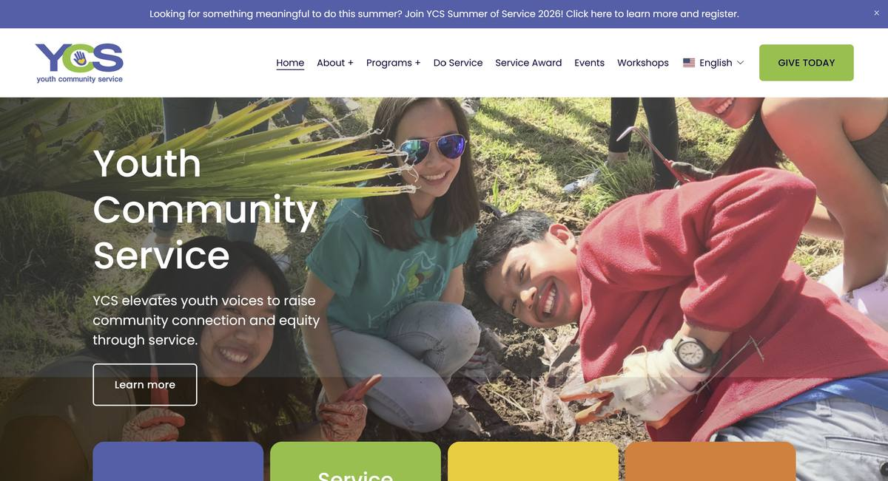
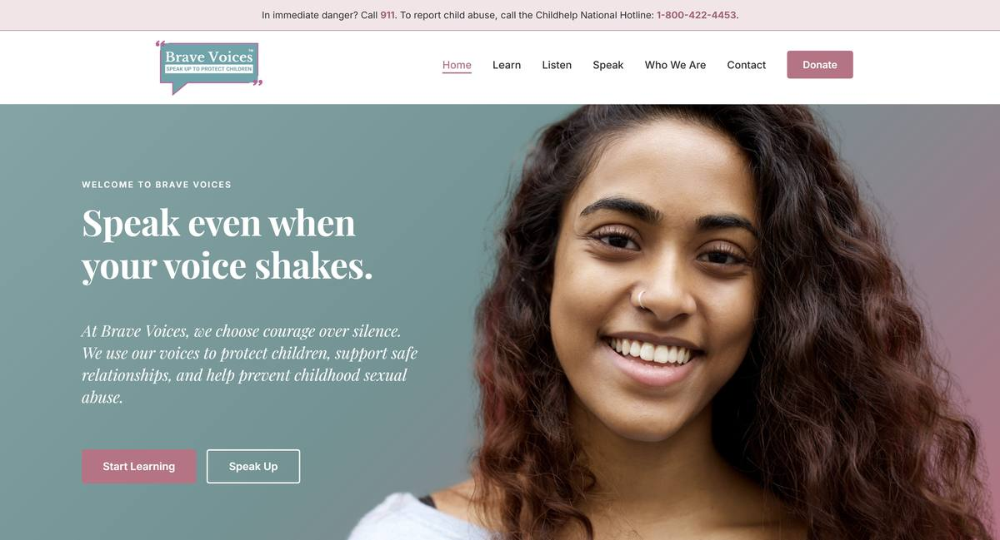
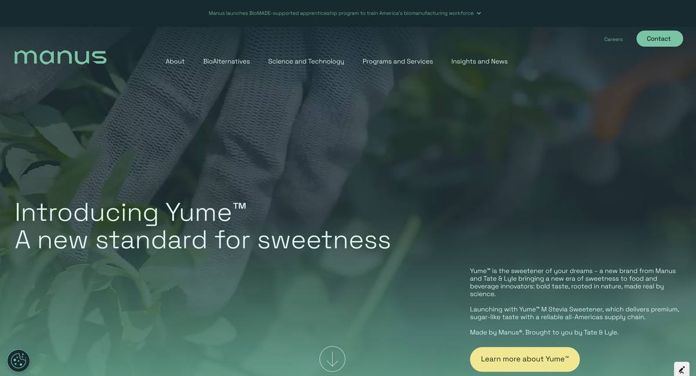
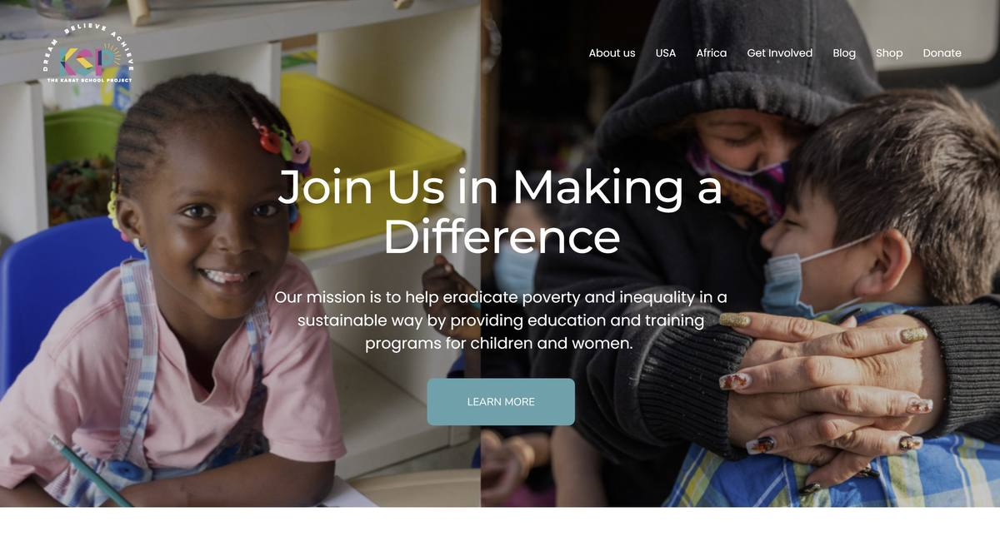
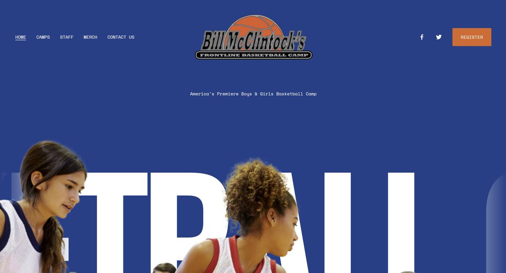
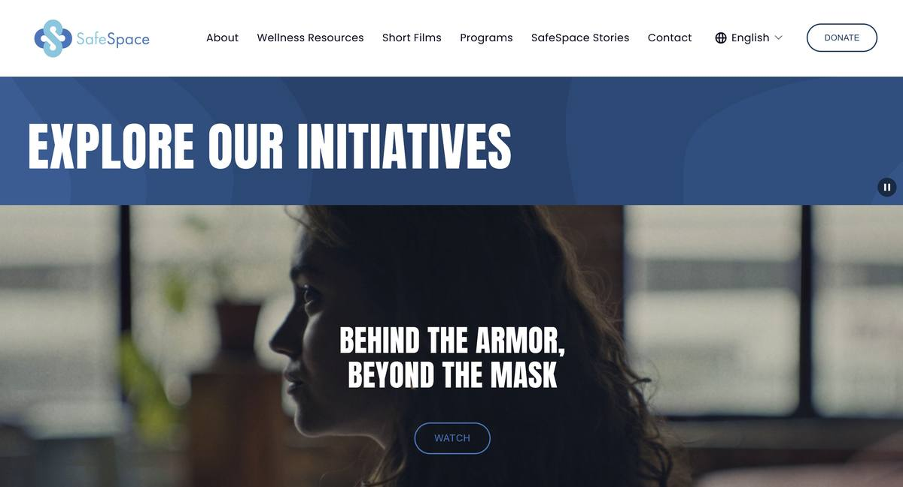

A sample of sites I've designed and built — from clean marketing sites to custom, animated experiences. Swap in screenshots and links as you build out your portfolio.
 Webflow · NonprofitCastro Country ClubNonprofit website built on Webflow
Webflow · NonprofitCastro Country ClubNonprofit website built on Webflow

Squarespace · NonprofitYouth Community ServiceNonprofit website built on Squarespace
Custom code · NonprofitBrave VoicesNonprofit site hand-coded and hosted on Netlify
Webflow · CorporateManusCorporate website built on Webflow
Squarespace · NonprofitThe Karat School ProjectNonprofit website built on Squarespace
Squarespace · BusinessFrontline Basketball CampBill McClintock's basketball camp, built on Squarespace Squarespace · AuthorCarole StiversAuthor website built on Squarespace
Squarespace · AuthorCarole StiversAuthor website built on Squarespace
 Webflow · CorporateReveal AICorporate website built on Webflow
Squarespace · AuthorSteven LevyAuthor website built on Squarespace
Webflow · CorporateReveal AICorporate website built on Webflow
Squarespace · AuthorSteven LevyAuthor website built on Squarespace

Squarespace · NonprofitSafeSpaceNonprofit website built on Squarespace"Jeannie went above and beyond, patiently working through layers of technical gobbledygook to update our outdated page. She implemented every request quickly and efficiently, no matter how difficult — we always knew we were in great hands, and the result was beautiful. A joy to work with."